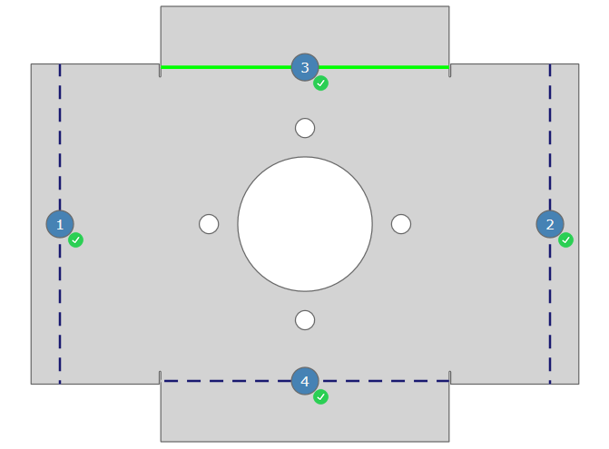

Cette boîte de dialogue vous permet d'appliquer manuellement la séquence de pliage à une pièce. La définition de la séquence de pliage peut intervenir de deux manières.
- À l'aide des boutons sur le bord inférieur de la boîte de dialogue.
- Tapez sur une ligne de pliage quelconque dans la vue 2D sous la vue pour définir la ligne de pliage comme le pliage suivant de la ligne de pliage et la marquer en vert. Le statut de la ligne de pliage active est signalé par un symbole dans le tableau et dans la vue 2D.
Attention! Les lignes de pliage sans symbole statut ne peuvent généralement pas être ajoutées sans collision à la séquence de pliage.
Le pliage peut être affiché dans la vue dans un aperçu 3D. Pour afficher le pliage en aperçu, le bouton Avant l'exécution doit être désactivé dans la barre d'affichage.
Fig.: Bouton désactivé Avant l'exécution dans la barre d'affichage

Définition de la séquence de pliage dans la vue 2D
Cliquez sur une ligne de pliage pour l'ajouter à la séquence de pliage. L'ajout est réalisé dans l'ordre avec lequel vous cliquez sur les lignes de pliage.
Les lignes de pliage appliquées sont représentées en grisé. L'ordre dans la séquence de pliage est indiqué par des numéros avec le symbole de statut correspondant sur la ligne de pliage (See « État»).
Fig.: Séquence de pliage La séquence de pliage désigne l'usinage de toutes les arêtes de pliage d'une pièce dans une séquence définie. Une pièce de pliage peut être généralement pliée par plusieurs séquences de pliage. Lors de la définition automatique de la séquence de pliage, le programme définit la séquence de pliage optimale et l'affecte à la pièce de pliage. appliquée partiellement sur une pièce

| Symbole | Description |
|---|---|

|
Ce bouton permet d'assigner la ligne de pliage sélectionnée à la séquence de pliage. |

|
Ce bouton permet de supprimer à nouveau de la ligne de pliage la séquence de pliage assignée. |

|
Ce bouton permet d'accepter une collision affichée sur une ligne de pliage. La fonction n'est activée que si le processus de pliage sélectionné entraîne une collision avec soi-même ou une pièce de la machine. |

|
Ce bouton vous permet de faire pivoter l'outil ou la pièce de pliage sur sa position. La modification est affichée dans la fenêtre 3D. |

|
Ce bouton permet de supprimer toutes les séquences de pliage de la pièce de pliage. |
Indique le statut de la ligne de pliage dans la séquence de pliage.
| Symbole | Description |
|---|---|

|
La séquence de pliage pour la ligne de pliage n'a pas encore été définie et peut être ajoutée sans collision à la séquence de pliage. |
| Une séquence de pliage est affectée à la ligne de pliage. | |

|
Le pliage ne peut être plié qu'avec une collision. |

|
Il y a une erreur sur la ligne de pliage. |
| La séquence de pliage pour le processus de pliage n'a pas encore été vérifiée. Exécutez la fonction Vérifier. | |

|
Le pliage avec une collision a été accepté. |
Processus
Indique l'ordre des processus de pliage avec un numéro courant.
Angle
Affiche l'angle du pliage. L'angle 0 n'est utilisé que lors du pliage d'extrémité d'un pliage plat.
Opération de pliage
Indique le type de pliage du processus de pliage.
- Pliage normal Le pliage normal désigne la méthode habituelle pour créer un pliage. Le pliage est défini par l'angle de pliage et par un angle de pliage optionnel.
- Pliage à plat Ce type de pliage plie à plat la tôle avec un angle de pliage de 180 °. Le pliage est réalisé en deux étapes successives « Prépliage » et « Pliage à plat » Ces étapes peuvent également être exécutées séparément l'une de l'autre.
- Prépliage Ce type de pliage crée un pliage en deux temps. Le pliage est réalisé tout d'abord avec un angle de pliage, après quoi il est finalisé avec l'angle d'extrémité. Utilisez le prépliage pour les pièces de pliage complexes afin d'éviter les collisions pendant le processus de pliage.
- Pliage auxiliaire Le pliage auxiliaire est inséré provisoirement sur des formes de pliage définies puis repliées afin de permettre la forme d'extrémité d'une pièce de pliage.
- Rayon de croquage